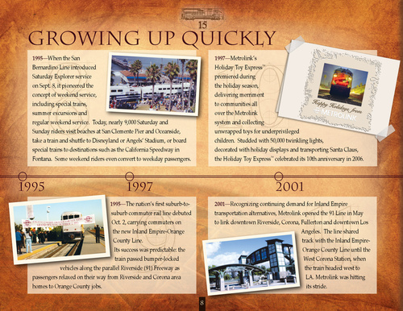

|

Growing Up Quickly
1995—When the San Bernardino Line introduced Saturday Explorer service on Sept. 8, it pioneered the concept of weekend service, including special trains, summer excursions and regular weekend service. Today, nearly 9,000 Saturday and Sunday riders visit beaches at San Clemente Pier and Oceanside, take a train and shuttle to Disneyland or Angels’ Stadium, or board special trains to destinations such as the California Speedway in Fontana. Some weekend riders even convert to weekday passengers. 1997—Metrolink’s Holiday Toy Express premiered during the holiday season, delivering merriment to communities all over the Metrolink system and collecting unwrapped toys for underprivileged children. Studded with 50,000 twinkling lights, decorated with holiday displays and transporting Santa Claus, the Holiday Toy Express celebrated its 10th anniversary in 2006.
TM TM
1995
1997
2001
2001—Recognizing continuing demand for Inland Empire transportation alternatives, Metrolink opened the 91 Line in May to link downtown Riverside, Corona, Fullerton and downtown Los Angeles. The line shared track with the Inland EmpireOrange County Line until the West Corona Station, when the train headed west to LA. Metrolink was hitting its stride. 8
1995—The nation’s first suburb-tosuburb commuter rail line debuted Oct. 2, carrying commuters on the new Inland Empire-Orange County Line. Its success was predictable: the train passed bumper-locked vehicles along the parallel Riverside (91) Freeway as passengers relaxed on their way from Riverside and Corona area homes to Orange County jobs.
|